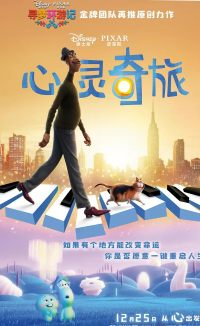

8.7
豆瓣
乔伊·高纳是一位生活在纽约市的中学音乐老师，他一直梦想着能在舞台上演奏爵士乐。当他终于获得了与传奇爵士乐手多萝西娅·威廉姆斯同台演出的机会时，却在兴奋之余意外掉进了一个下水道，醒来后发现自己来到了一个奇幻的地方——"灵魂世界"。
在那里，乔伊遇到了一个拒绝前往地球的灵魂"22号"，她对人类生活毫无兴趣，认为人生没有意义。为了回到自己的身体，乔伊必须帮助22号找到对生活的热情。在这个过程中，两人一同经历了一系列奇妙的冒险，也逐渐明白了生命的真谛：人生的意义不在于达成某个宏伟目标，而在于珍惜当下的每一个平凡瞬间。

言铖
2024-10-28 15:30
看到乔伊和22号在灵魂世界的冒险时，完全被戳中了！尤其是最后明白“人生意义在当下”的瞬间，突然觉得平凡的日常也超珍贵，画面和立意都满分～
一叶孤舟
2024-10-27 20:15
音乐和画面的融合太绝了！不过最打动我的不是爵士乐梦想，而是22号对“活着”的抗拒到接纳的过程，像在看自己和生活的和解，很治愈。
口十言成
2024-10-26 18:40
刷了两遍！第一次被剧情吸引，第二次注意到很多细节——比如灵魂世界的色彩变化，从冷蓝到暖金，完全和主角心境同步，太用心了！